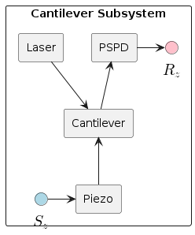
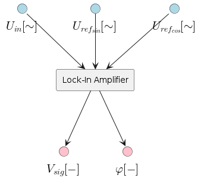
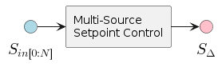

AFM / SPM Components Diagrams
Table of Contents
1. Overarching Diagram

2. Cantilever Subsystem
2.1. Diagram

- Is the piezo oscillator the same as the piezo on the sample? I.e., are we dealing with just one piezo, which we oscillate? I suppose the answer is yes…
2.2. Parameters
| Grouping | Parameter | Description | Units |
|---|---|---|---|
| PSPD | invOLS | m/V | |
| Cantilever | Spring Constant | ||
| Resonant Frequency | |||
| Q-Factor | |||
| Tip-Surface | Tip-Surface Bias Voltage | V | |
| Bias Amplifier Gain | V | ||
| Bias Amplifier Offset | V |
3. Scanning Subsystem
3.1. Diagram

3.2. Parameters
| Grouping | Parameter | Description | Units |
|---|---|---|---|
| Piezo | {3d} | Piezo Sensitivity | Ang/V |
| (out) | {3d} | Piezo Amplifier Gain | V/V |
| {3d} | Piezo Amplifier Offset/Bias | V | |
| LVDT | {3d} | LVDT Sensitivity | V/Ang |
| (in) | {3d} | LVDT Offset/Bias | V |
| Scan Params | {2d} | Maximum Scan Dimensions | m |
| {2d} | Current Scan Dimensions | m | |
| {2d} | Current Scan Offset (x,y) | m | |
| {2d} | Coordinate System Origin | m | |
| ROI Angle (if applicable) | ° | ||
| Scan Direction | N/A | ||
| Scanning Speed | m/s | ||
| Moving Speed (not scanning) | m/s |
4. Dynamic Mode Components
4.1. Lock-In Amplifier
4.1.1. Simple

4.1.2. Expanded

4.1.3. Parameters
| Grouping | Parameter | Description | Units |
|---|---|---|---|
| Signal Amplitude | V | ||
| Reference Frequency | Hz | ||
| Averaging Period | cycles |
4.2. Phase Locked Loop (PLL)
4.2.1. Simple
4.2.2. Expanded
4.2.3. Parameters
| Grouping | Parameter | Description | Units |
|---|---|---|---|
5. Feedback Subsystem
5.1. Source Mixer
5.1.1. Simple

5.1.2. Expanded

5.1.3. Parameters
| Grouping | Parameter | Description | Units |
|---|---|---|---|
| Input | Conversion factor (Units-to-V) | x/V | |
| Low-Pass Filter | f0 | Cut-off Frequency | Hz |
| f0min | Min. F0 (if adaptive) | Hz | |
| f0max | Max. F0 (if adaptive) | Hz | |
| Icrossover | Current Crossover (if adaptive) | A | |
| Transform | Mode: 0:Off, 1:On, 2:Log, 4:IIR, 8:FUZZY | n/a | |
| Fuzzy-Mode Threshold Level (FUZZY Only) | V | ||
| Miscellaneous | Reference Set-Point (fixed or provided by signal) | V | |
| Gi: gain applied to final signal i (before summing) |
5.2. PID Controller
5.2.1. Simple
5.2.2. Expanded
5.2.3. Parameters
| Grouping | Parameter | Description | Units |
|---|---|---|---|
| Proportional Gain | V/V | ||
| Integral Gain | V/V | ||
| Derivative Gain | V/V |